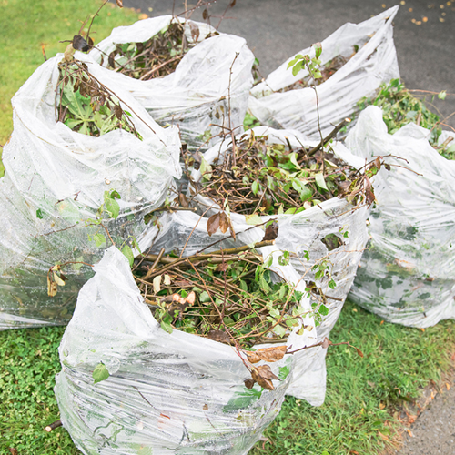
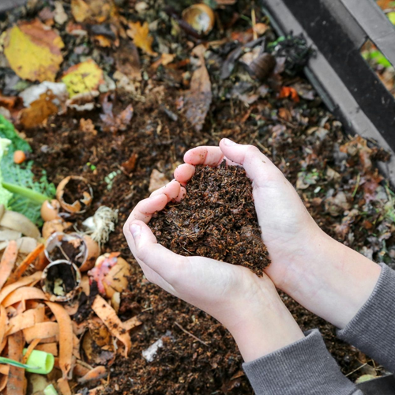
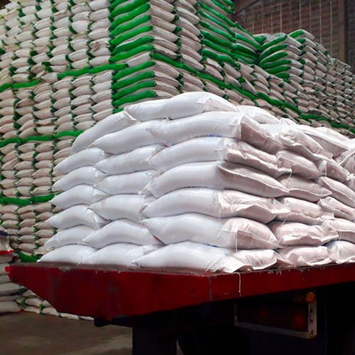
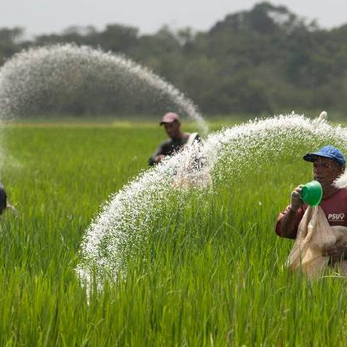
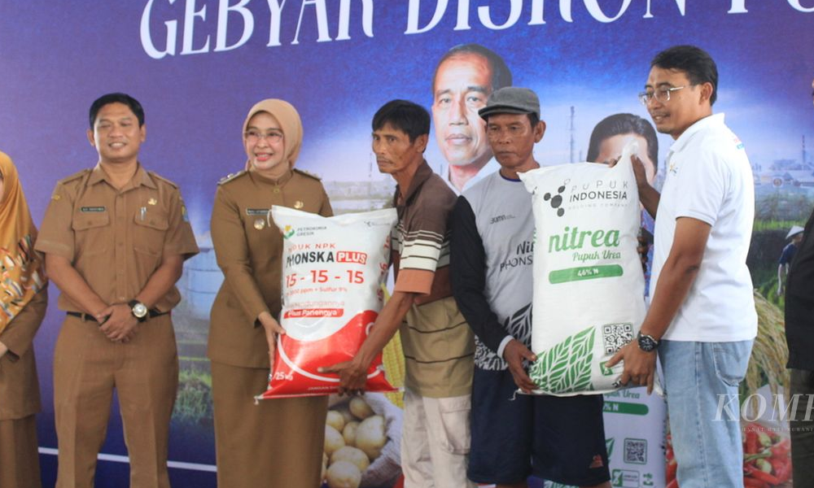

DONASI
DONASI BERULANG
VOLUNTEER
TENTANG KAMI
FEEDBACK
PROGRAM UNGGULAN SISA PANGAN MENJADI ANUGERAH
________________________________
TAHAP-TAHAP PUSPA

Pengumpulan sampah organik dari penduduk sekitar

Pengolahan sampah menjadi kompos oleh sukarelawan

Pendistribusian kompos ke lokasi yang kekurangan pupuk bersubsidi

Pemanfaatan kompos oleh petani lokal yang membutuhkan
VOLUNTEER

Stok Melimpah, Petani Malah Kekurangan Pupuk Bersubsidi.
Petani yang selama ini kekurangan pupuk bersubsidi akhirnya bisa beli pupuk, tetapi nonsubsidi dengan diskon 40 persen.
Stok Melimpah, Petani Malah Kekurangan Pupuk Bersubsidi. Petani yang selama ini kekurangan pupuk bersubsidi akhirnya bisa beli pupuk, tetapi nonsubsidi dengan diskon 40 persen.
Stok Melimpah, Petani Malah Kekurangan Pupuk Bersubsidi. Petani yang selama ini kekurangan pupuk bersubsidi akhirnya bisa beli pupuk, tetapi nonsubsidi dengan diskon 40 persen.
Pencapaian Kami
Jumlah donasi
Rp
15.430.000
Jumlah sukarelawan
0

Jumlah kompos
Kg
SELENGKAPNYA
 PROGRAM UNGGULAN SISA PANGAN MENJADI ANUGERAH
PROGRAM UNGGULAN SISA PANGAN MENJADI ANUGERAH